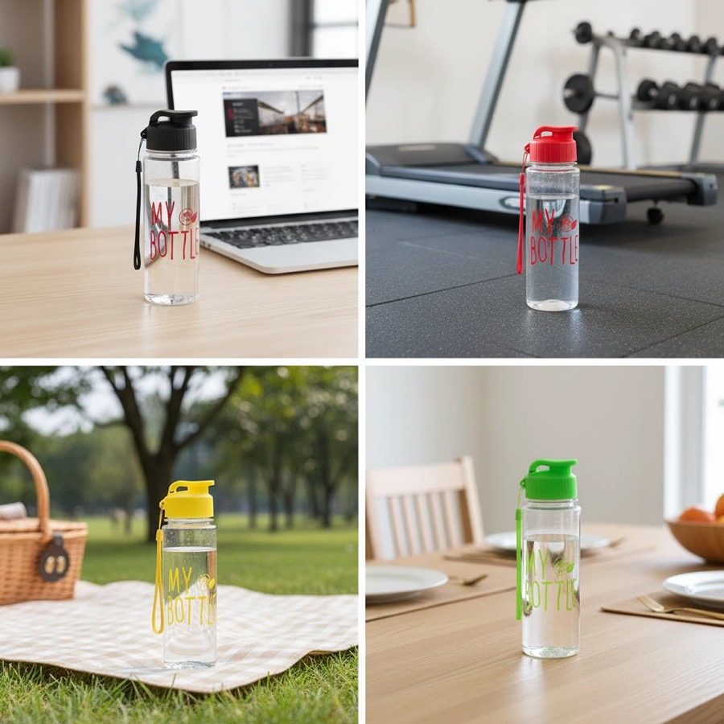

Low MOQ & Sample Planning
Selected stock-based custom logo projects can start from 200 pcs. Buyers can request a stock or logo sample to confirm the selected model, finish, logo position and packaging before bulk production.
Custom drinkware sourcing guide
HDS Drinkware (Huandingsheng) supports China custom drinkware sourcing, low-MOQ branding and OEM/ODM project coordination for Amazon sellers, TikTok sellers, Shopify brands and gift buyers. This page explains product options, MOQ details, logo methods, packaging choices, sample timing and quote preparation for B2B buyers.



Selected stock-based custom logo projects can start from 200 pcs. Buyers can request a stock or logo sample to confirm the selected model, finish, logo position and packaging before bulk production.
Depending on the product and agreed inspection plan, QC can include vacuum checks, handle review, coating adhesion checks, logo inspection and packing review. HDS can also coordinate DDP/DDU shipping discussions for supported destinations.
tumblers, water bottles, coffee cups, sports bottles and gift drinkware sets can be fully customized by capacity, color, finish, and lid accessories. HDS helps buyers compare practical options starting from 200 pcs to minimize upfront inventory costs.
Our MOQ starts from 200 pcs for selected custom drinkware styles. This allows Amazon, Shopify, and TikTok Shop sellers to validate demand and test custom brand features before scaling up.
Material choices can include 304 (18/8) stainless steel for vacuum-insulated double-wall tumblers, high-borosilicate glass, and plastic options such as PP, PC or Tritan-style copolyester. Available food-contact documentation and testing requirements should be confirmed for the selected product and destination market before bulk production.
Branding support includes permanent laser engraving (best for stainless steel), silk screen printing (for simple multi-color logos), UV printing (for gradients and complex artwork), and water/heat transfer printing. We help match the best method to your logo design.
Private label packaging options include standard white/brown boxes, custom color retail boxes with hang tags, premium cardboard gift boxes with custom-shaped foam/pulp inserts, and custom sleeves. Perfect for retail branding and corporate gift sets starting from 200 pcs.
Stock samples can move quickly when available; logo and packaging samples require artwork and material confirmation. Bulk timing is quoted after the product, quantity, finish and packaging are fixed. DDP, DDU, FOB and EXW options can be discussed by destination and project.
Product comparison
| Option | Best For | Customization Focus | Buyer Notes |
|---|---|---|---|
| Entry test order | New sellers and first projects | Stock color, simple logo, standard packing | Useful when the buyer needs to validate demand with lower inventory pressure. |
| Private label order | Amazon sellers, TikTok sellers, Shopify brands and gift buyers | Logo, color, packaging, barcode and carton marks | Better for buyers who need a repeatable product line. |
| Gift packaging order | Gift companies and corporate buyers | Gift box, insert, card, tote bag and bundle planning | Presentation and sample approval should be confirmed early. |
| Wholesale repeat order | Distributors and wholesale buyers | Stable product, mixed colors, cartons and shipping plan | Best when reorder timing and carton data matter. |
| Method | Best Use | Strength | Notes |
|---|---|---|---|
| Laser engraving | Stainless steel and premium gifts | Durable, clean and professional | Good for corporate and private label positioning. |
| Silk screen printing | Simple logos and larger runs | Clear and cost-effective | Works best with simpler artwork. |
| UV printing | Color logos and detailed artwork | Better visual detail | Sample review is recommended before bulk order. |
| Label or packaging branding | Fast tests and gift sets | Flexible and practical | Useful when buyers want branding without complex setup. |
| Packaging | Best For | Support Details |
|---|---|---|
| Standard box | Samples and wholesale orders | Basic protection and practical carton packing. |
| Color box | Amazon, Shopify and retail channels | Can support barcode, brand information and product presentation. |
| Gift box | Corporate gifts and holiday programs | Can coordinate inserts, cards, sleeves and custom box print. |
| Custom bundle packaging | Gift companies and promotional buyers | Can combine drinkware, cards, tote bags, labels and carton marks. |
Low MOQ Custom Drinkware Supplier & Manufacturer is suitable for Amazon sellers, TikTok sellers, Shopify brands and gift buyers. Amazon sellers may use low MOQ orders to test color demand and listing response. TikTok Shop sellers may focus on visual product styles and fast samples. Shopify brands often care about private label packaging and repeat order consistency. Gift companies and corporate buyers usually need logo approval, gift box planning and event timing. Distributors need stable product options, carton information and shipping coordination. HDS supports these buyers with sourcing, OEM/ODM customization, packaging coordination and sample support before bulk order.
Quote and sample checklist
Low MOQ projects work best when buyers keep the first test clear, simple and measurable.
Selected stock-based logo projects can start from 200 pieces per style. Whether colors can be mixed depends on available stock, decoration setup and the packaging plan, so the quotation should state the quantity per color.
Low-MOQ projects are often most practical when buyers select an available stock model and use a decoration method that does not require a new mold or a custom production run. HDS confirms the product, setup cost and lead time in the project quotation.
MOQ for selected low moq custom drinkware supplier & manufacturer projects can start from 200 pcs. Final MOQ depends on product style, material, color, logo method, packaging and current supply availability.
HDS can discuss tumblers, water bottles, coffee cups, sports bottles and gift drinkware sets by capacity, material, color, finish, lid, accessories, logo method and packaging requirement.
Material options include stainless steel, plastic, PC, PP and packaging-ready options. The suitable option depends on the target market, use case, compliance request and price range.
Send a product photo or reference link, quantity, logo file, packaging request, destination country and target delivery time. These details help HDS prepare a more relevant quotation.
This page is written for Amazon sellers, TikTok sellers, Shopify brands and gift buyers who need custom drinkware sourcing, logo customization, packaging support and export coordination from China.
Amazon seller drinkware | TikTok Shop drinkware | MOQ guide | Request quote checklist
Send your product idea, test quantity, logo and packaging needs. HDS will help compare a low MOQ path before you scale repeat orders.